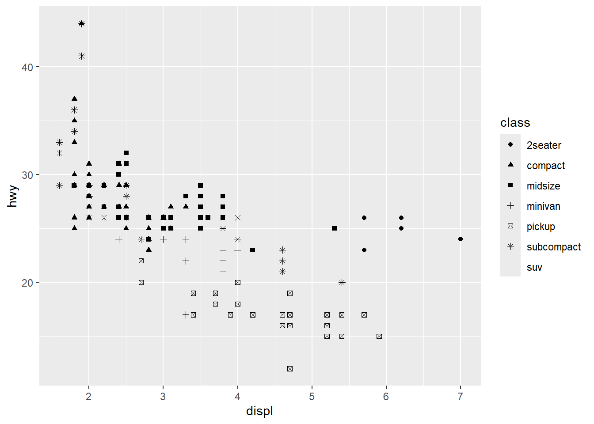
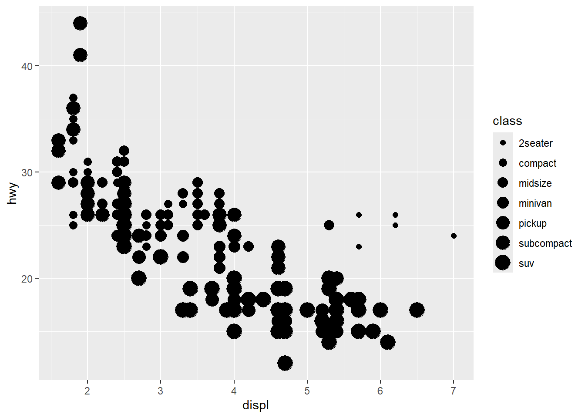
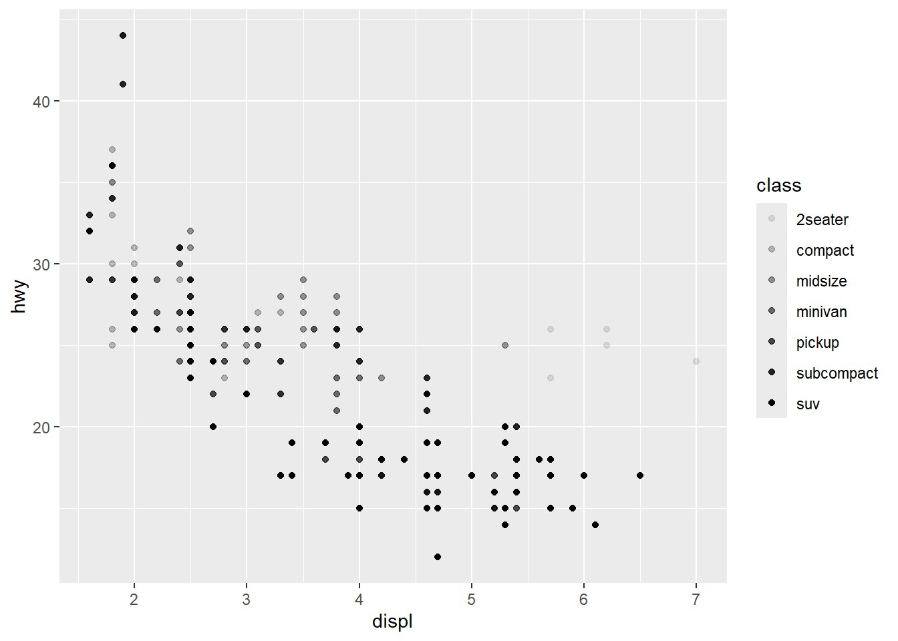
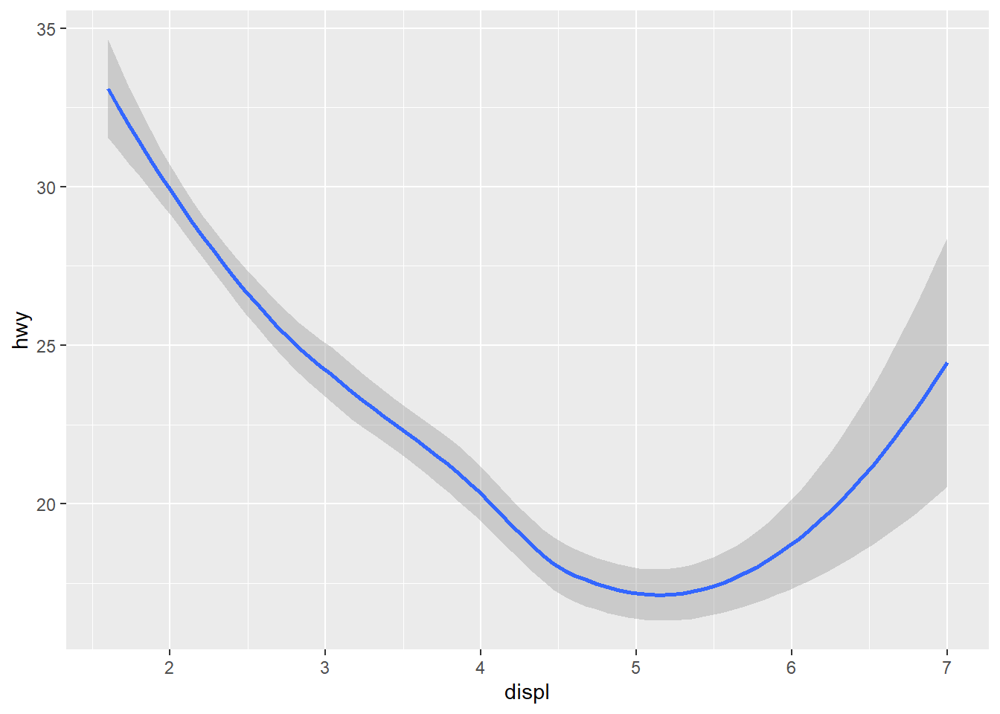
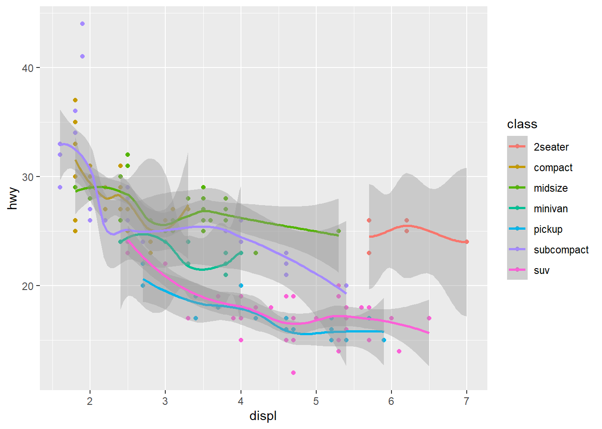
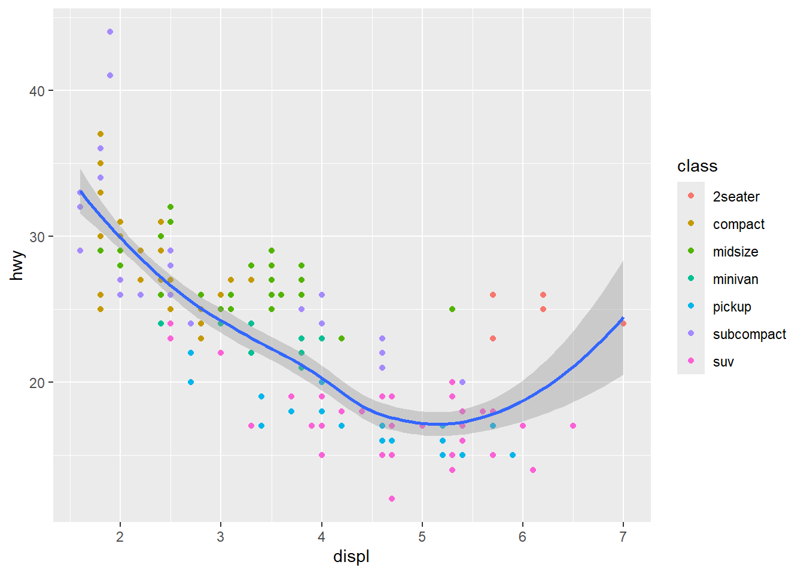

데이터 시각화하기
실습 개요
이 실습은 R로 데이터사이언스를 하는 과정 중 데이터 시각화하기(visualizing)를 다룬다. 데이터 시각화하기는 tidyverse의 핵심 패키지 중의 하나인 ggplot2 에서 제공된다. 모든 실습의 시작은 tidyverse 패키지를 불러오는 것이다.
이 실습에서는 ggplot2 패키지 속에 포함되어 이쓴 mpg 데이터를 사용한다.
mpg# A tibble: 234 × 11
manufacturer model displ year cyl trans drv cty hwy fl class
<chr> <chr> <dbl> <int> <int> <chr> <chr> <int> <int> <chr> <chr>
1 audi a4 1.8 1999 4 auto… f 18 29 p comp…
2 audi a4 1.8 1999 4 manu… f 21 29 p comp…
3 audi a4 2 2008 4 manu… f 20 31 p comp…
4 audi a4 2 2008 4 auto… f 21 30 p comp…
5 audi a4 2.8 1999 6 auto… f 16 26 p comp…
6 audi a4 2.8 1999 6 manu… f 18 26 p comp…
7 audi a4 3.1 2008 6 auto… f 18 27 p comp…
8 audi a4 quattro 1.8 1999 4 manu… 4 18 26 p comp…
9 audi a4 quattro 1.8 1999 4 auto… 4 16 25 p comp…
10 audi a4 quattro 2 2008 4 manu… 4 20 28 p comp…
# ℹ 224 more rows총 11개의 변수 중 다음의 세 가지 변수가 특히 중요하다.
displ: 자동차의 엔진 크기hwy: 고속도로 연비class: 자동차의 유형
1 심미성 매핑(aesthetic mappings)
displ과 hwy의 관계가 class에 따라 어떻게 달라지는 지를 시각화한다. 다음의 두 그래프를 비교해 본다.
ggplot(mpg, aes(x = displ, y = hwy, color = class)) +
geom_point()
ggplot(mpg, aes(x = displ, y = hwy, shape = class)) +
geom_point()
Figure 1 과 Figure 2 중 어느 것이 더 효과적인 시각화라고 생각하는가? 컬러(color)와 형태(shape)라는 심미성 요소 외에 크기(size)와 투명도(alpha) 요소를 동일한 데이터에 적용해 본다.
ggplot(mpg, aes(x = displ, y = hwy, size = class)) +
geom_point()
ggplot(mpg, aes(x = displ, y = hwy, alpha = class)) +
geom_point()
크기와 투명도는 양적인 차이를 나타내는데 보다 적합하기 때문에 class라는 정성적인 범주의 차이를 보여주는데는 적합하지 않다. 심미성 매핑에서 가장 중요한 것은 결국 얼마나 적절한 시각 변수(visual variable)를 선택하느냐에 달려 있다.
2 기하 객체(geometric objects)
다음의 두 그래프가 다르게 느껴지는 것은 그래프를 작성하기 위해 동원된 객체의 기하학적 특성이 다르기 때문이다. Figure 5 와 Figure 6 이 다르게 보이는 것은 기하 객체가 하나는 포인트(point)이고 다른 하나는 완만한 선(smooth)이기 때문이다.
ggplot(mpg, aes(x = displ, y = hwy)) +
geom_point()
ggplot(mpg, aes(x = displ, y = hwy)) +
geom_smooth()
Figure 1 과 Figure 6 두 개를 결합해 본다.
ggplot(mpg, aes(x = displ, y = hwy, color = class)) +
geom_point() +
geom_smooth()
원하는 것이 아니다. 왜 이런 결과가 나왔으며, 어떻게 하면 원하는 것을 얻을 수 있을지 생각해 본다.
ggplot(mpg, aes(x = displ, y = hwy)) +
geom_point(aes(color = class)) +
geom_smooth()
두 결과의 차이는 color 심미성 요소를 글로벌하게 적용하느냐 로컬하게 적용하느냐(포인트 객체에만 적용)에 달린 것이다. 글로벌한 심미성은 ggplot()속에서 설정하고, 국지적인 심미성은 개별 기하 객체 속에서 설정한다. 매우 중요한 사항이니 꼭 기억하도록 한다.
재밌다.